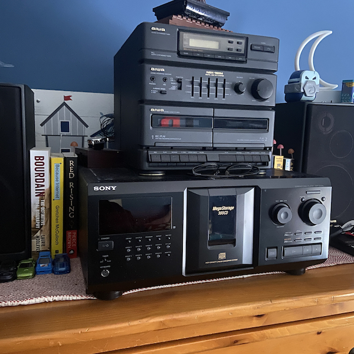

Projects
Just some insight into some of my other creative interests.
Currently Showcased Project:
Recent Project Posts
Collage of Images I Like
I really just wanted a place to put a collection of images that I find online and like. I urdge anyone who likes any of the art shown under this page to please click on the images, as it will redirect you to the source of the image, so that you can find the creator and give them the proper love they deserve.
Begining to Learn Basic Electronics
Blah Blah Blah Blah Blah Blah

Switch to Physical Media
With the rising price of music streaming services and nothing to own to show for it, i got fed up and cancelled my spotify subscription in an attempt to switch to mostly physical music. Read more here about my switch, what moves i made to make switching easier, and suggestions for those who also would like to make the switch.
CD Case Tracking Application
In tendem with my switch to physical media, i ahve become encumbered with many different CD cases. And I want to catalouge all of the physical media that I now own, including an image of the case. To make this easier I am going to attempt to learn object tracking and image captuing using Yolov5. Join me in my attempt to learn something new and follow my progress.
2005 Apple EMac Restoration
Originally something I saw on Facebook Marketplace, I couldn't resist its beautiful CRT monitor and at only $25 I had to bite. The only problem is, it doesnt boot to the OS. However I believe this to be totally fixable. Track my progress and see what else I have done with the Emac my reading more here.